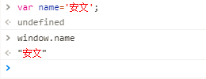

到目前为止，我们已经学过了JavaScript的一些简单的语法。但是这些简单的语法，并没有和浏览器有任何交互。
也就是我们还不能制作一些我们经常看到的网页的一些交互，我们需要继续学习BOM和DOM相关知识。
JavaScript分为 : ECMAScript，DOM，BOM。
BOM（Browser Object Model）是指浏览器对象模型，它使 JavaScript 有能力与浏览器进行“对话”。
DOM （Document Object Model）是指文档对象模型，通过它，可以访问HTML文档的所有元素。
Window对象是客户端JavaScript最高层对象之一，由于window对象是其它大部分对象的共同祖先，在调用window对象的方法和属性时，可以省略window对象的引用。例如：window.document.write()可以简写成：document.write()。

| name直接封装到了window对象上,所有浏览器都支持 window 对象。它表示浏览器窗口。没有应用于 window 对象的公开标准，不过所有浏览器都支持该对象 |
window.innerHeight - 浏览器窗口的内部高度
window.innerWidth - 浏览器窗口的内部宽度
window.open() - 打开新窗口
window.close() - 关闭当前窗口 (只能关闭用js的window.open()打开的页面，了解一下就行了)navigator.appName // Web浏览器全称
navigator.appVersion // Web浏览器厂商和版本的详细字符串
navigator.userAgent // 客户端绝大部分信息
navigator.platform // 浏览器运行所在的操作系统 screen.availWidth - 可用的屏幕宽度
screen.availHeight - 可用的屏幕高度history.forward() // 前进一页，其实也是window的属性，window.history.forward()
history.back() // 后退一页可以在 JavaScript 中创建三种消息框：警告框、确认框、提示框。
alert("你看到了吗？");
confirm("你确定吗？")
prompt("请在下方输入","你的答案")location.href 获取URL
location.href="URL" // 跳转到指定页面
实例：location.href='http://www.baidu.com';
location.reload() 重新加载页面,就是刷新一下页面setTimeout（）
var t=setTimeout("JS语句",毫秒) #一段时间之后做某些事 第一个参数js语句多数是写一个函数，不然一般的js语句到这里就直接执行了，先用函数封装一下，返回值t其实就是一个id值（浏览器给你自动分配的）
var t=setTimeout("confirm('你好')",3000);
clearTimeout()
clearTimeout(setTimeout_variable)
// 在指定时间之后执行一次相应函数
var timer = setTimeout(function(){alert(123);}, 3000)
// 取消setTimeout设置
clearTimeout(timer);
setInterval("JS语句",时间间隔) #每隔一段时间做一些事情
// 每隔一段时间就执行一次相应函数
var timer = setInterval(function(){console.log(123);}, 3000)
// 取消setInterval设置
clearInterval(timer);document.getElementById 根据ID获取一个标签
document.getElementsByClassName 根据class属性获取（可以获取多个元素，所以返回的是一个数组）
document.getElementsByTagName 根据标签名获取标签合集
示例:
<div class="c1" id="d1">
待到将军归来日,朕与将军解战袍!
</div>
<div class="c1" id="d2">
日照香炉生紫烟,遥看瀑布挂前川!
</div>
var a = document.getElementById('d1'); # 获取id属性值为d1的标签 拿到的直接是标签对象
var a = document.getElementsByClassName('c1'); #获取class值为c1的所有标签 拿到的是数组
var a = document.getElementsByTagName('div'); #获取所有div标签 拿到的是数组
var a = document.getElementById('d1');
a.parentElement; #获取a这个标签的父级标签.
children 所有子标签
firstElementChild 第一个子标签元素
lastElementChild 最后一个子标签元素
nextElementSibling 下一个兄弟标签元素
previousElementSibling 上一个兄弟标签元素
创建节点(创建标签)
var a = document.createElement('标签名称');
示例,创建a标签
var a = document.createElement('a');
var dd = document.getElementById('dd'); 找到div标签
添加节点
#添加节点,添加到了最后
父级标签.appchild(要添加节点)
dd.appendChild(a);将创建的a标签添加到dd这个div标签里面的最后.
#在某个节点前面添加节点
父级标签.insertBefore(新标签,某个儿子标签)
示例
var dd = document.getElementById('dd'); #找到父级标签
var a = document.createElement('a'); #创建一个新的a标签
var d2 = dd.children[1]; #找到父级标签下的某个儿子标签
dd.insertBefore(a,d2); #将a标签插入到上面这个儿子标签的前面.
删除节点
dd.removeChild(d2); 父级标签中删除子标签
替换节点
var dd = document.getElementById('dd'); #找到父级标签
var a = document.createElement('a'); #创建a标签
a.innerText = '百度';
var d1 = dd.children[0]; #找到要被替换的子标签
dd.replaceChild(a,d1); #替换
d1.innerText; 查看
var divEle = document.getElementById("d1")
divEle.innerText #输入这个指令，一执行就能获取该标签和内部所有标签的文本内容
divEle.innerHTML #获取的是该标签内的所有内容，包括文本和标签
设置:
d1.innerText = "<a href=''>百度</a>";
d1.innerHTML = "<a href=''>百度</a>"; 能够识别标签
var divEle = document.getElementById("d1");
divEle.setAttribute("age","18") #比较规范的写法
divEle.getAttribute("age")
divEle.removeAttribute("age")
// 自带的属性还可以直接.属性名来获取和设置，如果是你自定义的属性，是不能通过.来获取属性值的
imgEle.src
imgEle.src="..."
var inp = document.getElementById('username');
inp.value; #查看值
inp.value = 'taibai'; #设置值
选择框:
<select name="city" id="city">
<option value="1">上海</option>
<option value="2">北京</option>
<option value="3">深圳</option>
</select>
select标签.value
select标签.value=option标签的value属性值 这个标签就被选中了
var inp = document.getElementById('city');
inp.value; #查看值
inp.value = '1'; #设置值
var d = document.getElementById('oo');
d.classList; #获得这个标签的class属性的所有的值
d.classList.add('xx2'); #添加class值
d.classList.remove('xx2'); #删除class值
d.classList.contains('xx2'); #判断是否有某个class值,有返回true,没有返回false
d.classList.toggle('xx2'); #有就删除,没有就增加
var d = document.getElementById('oo');
d.style.backgroundColor = 'deeppink'; 有横杠的css属性,写法要去掉横杠,并且横杠后面的单词首字母大写
d.style.height = '1000px'
onclick 当用户点击某个对象时调用的事件句柄。
ondblclick 当用户双击某个对象时调用的事件句柄。
onfocus 元素获得焦点。 // 练习：输入框
onblur 元素失去焦点。 应用场景：用于表单验证,用户离开某个输入框时,代表已经输入完了,我们可以对它进行验证.
onchange 域的内容被改变。 应用场景：通常用于表单元素,当元素内容被改变时触发.（select联动）
onkeydown 某个键盘按键被按下。 应用场景: 当用户在最后一个输入框按下回车按键时,表单提交.
onkeypress 某个键盘按键被按下并松开。
onkeyup 某个键盘按键被松开。
onload 一张页面或一幅图像完成加载。
onmousedown 鼠标按钮被按下。
onmousemove 鼠标被移动。
onmouseout 鼠标从某元素移开。
onmouseover 鼠标移到某元素之上。
onselect 在文本框中的文本被选中时发生。
onsubmit 确认按钮被点击，使用的对象是form。
绑定事件的方式有两种
方式1:
<div id="d1" class="c1" onclick="f1();"></div>
<script>
function f1() {
var d = document.getElementById('d1');
d.style.backgroundColor = 'yellow';
}
</script>
方式2
<div id="d1" class="c1"></div>
var d = document.getElementById('d1');
d.onclick = function () {
d.style.backgroundColor = 'yellow';
}
绑定方式1:
this表示当前标签对象
<div id="d1" class="c1" onclick="f1(this);"></div>
function f1(ths) {
// var d = document.getElementById('d1');
// d.style.backgroundColor = 'yellow';
ths.style.backgroundColor = 'yellow';
var d = document.getElementById('d2');
d.style.backgroundColor = 'yellow';
}
方式2:
<div id="d1" class="c1"></div>
var d = document.getElementById('d1');
d.onclick = function () {
this.style.backgroundColor = 'yellow';
// d.style.backgroundColor = 'yellow'; //this表示当前标签对象
}
onblur和onfocus事件
var inp = document.getElementById('username');
inp.onfocus = function () {
var d = document.getElementById('d1');
d.style.backgroundColor = 'pink';
};
// onblur 失去光标时触发的事件
inp.onblur = function () {
var d = document.getElementById('d1');
d.style.backgroundColor = 'green';
};
onchange事件,域内容发生变化时触发
<select name="" id="jishi">
<option value="1">太白</option>
<option value="2">alex</option>
<option value="3">沛齐</option>
</select>
// onchange事件，内容发生变化时触发的事件
var s = document.getElementById('jishi');
s.onchange = function () {
//this.options select标签的所有的option标签
//this.selectedIndex被选中的标签在所有标签中的索引值
console.log(this.options[this.selectedIndex].innerText + '搓的舒服');
}
用户名:<input type="text" id="username">
//input标签绑定onchange事件
var inp = document.getElementById('username');
inp.onchange = function () {
console.log(this.value);
};